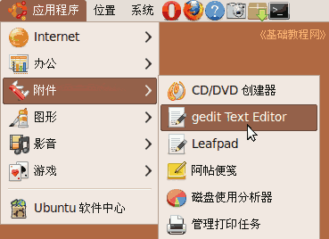

Ubuntu/GNOME 桌面程序指南
作者：TeliuTe 来源：基础教程网
五十八、文本编辑器 返回目录 下一课文本编辑器中可以编辑处理文本文件；
1、文本编辑器
1）点菜单“应用程序 - 办公 - 文本编辑器”，打开窗口；

2）窗口是多标签的，可以同时编辑多个文件；
3）点菜单“编辑 - 首选项”可以设置显示行号、突出当前行；
4）在“编辑器”选项中，可以去掉“保存前创建备份”，这会创建一个~结尾的备份文件；
5）在字体和颜色选项中，可以自定义字体和风格；
6）在“插件”中可以勾选所需的，然后在“编辑”菜单中使用；
本节学习了文本编辑器的基础知识，如果你成功地完成了练习，请继续学习下一课内容；
本教程由86团学校TeliuTe制作|著作权所有
基础教程网：http://teliute.org/
美丽的校园……
转载和引用本站内容，请保留版权信息和本站链接。